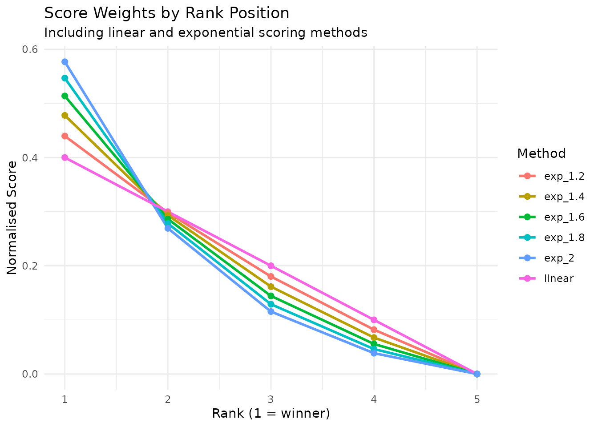

Understanding the Rating System
rating_system.RmdThis vignette explains the mathematical foundations of the eloextend rating system. To do this, we start by introducing the classic Elo system and subsequently explain the modifications required to extend it to multiplayer games.
Classic Elo Rating System
The Elo rating system provides a method for calculating the relative skill levels of players in two-player games. Originally dveloped for chess, it has since been adopted in many other competitive games
The Basic Formula
For a two-player game, player A’s rating is updated as follows:
where:
- is player A’s current rating
- is player A’s updated rating
- is the K-factor (controls rating volatility)
- is the actual score (1 for win, 0 for loss, 0.5 for draw)
- is the expected score
Extension to Multiplayer Games
In order to extend Elo ratings to multiplayer games, we would like to keep some desirable mathematical properties of the Elo system:
- Zero-sum property: Rating changes in any game sum to zero
- Score normalisation: Game scores always sum to 1
- Expected score consistency: Expected scores for all players sum to 1
Additionally: 4. Two-player convergence: For n=2 players, reduces to standard Elo
Pairwise Matchup Approach
eloextend achieves this by treating a multiplayer game as the sum of all pairwise matchups between participants.
For example, in a 3-player game where Alice finishes 1st, Bob 2nd, and Charlie 3rd, we consider three implicit matchups: - Alice vs Bob (Alice wins) - Alice vs Charlie (Alice wins) - Bob vs Charlie (Bob wins)
More generally, for a game with players, there are pairwise matchups.
Expected Score in Multiplayer
For player A in an -player game against opponents with ratings :
This formula sums player A’s expected win probability against each of their opponents, then normalises by the total number of pairwise matchups in the game. This normalisation ensures that expected scores across all players sum to 1.
Rating Update Formula
The rating update then becomes:
The multiplier ensures two features:
Zero-sum property: Each player’s score is based on their performance against opponents. The factor scales the rating change to match the number of pairwise matchups each player participates in. When we sum the rating changes across all players, the total is zero, meaning the total “rating” in the system remains constant.
Backwards compatibility: When , we have , so the formula reduces exactly to classic Elo: .
Example Calculation
# 3 player game, all start at rating 1000
current_ratings <- c(Alice = 1000, Bob = 1000, Charlie = 1000)
# game results: Alice wins, Bob 2nd, Charlie 3rd
game_ranks <- c(Alice = 1, Bob = 2, Charlie = 3)
update_ratings(game_ranks, current_ratings)
#> Alice Bob Charlie
#> 1023.8431 997.4902 978.6667The sum of changes is zero (within floating-point precision), confirming the zero-sum property.
Convergence to Classic Elo
For 2-player games, our system is mathematically equivalent to classic Elo:
# 3 player game, all start at rating 1000
current_ratings <- c(PlayerA = 1000, PlayerB = 1000)
# game results: Alice wins, Bob 2nd, Charlie 3rd
game_ranks <- c(PlayerA = 1, PlayerB = 2)
# eloextend calculation
eloextend_ratings = update_ratings(game_ranks, current_ratings)
# Classic Elo calculation
R_A <- 1000
R_B <- 1000
E_A <- 1 / (1 + 10^((R_B - R_A) / 400))
E_B <- 1 / (1 + 10^((R_A - R_B) / 400))
S_A <- 1 # Winner
S_B <- 0 # Loser
classic_A <- R_A + 32 * (S_A - E_A)
classic_B <- R_B + 32 * (S_B - E_B)
# Compare
data.frame(
Implementation = c("eloextend", "classic elo"),
PlayerA = c(eloextend_ratings["PlayerA"], classic_A),
PlayerB = c(eloextend_ratings["PlayerB"], classic_B)
)
#> Implementation PlayerA PlayerB
#> PlayerA eloextend 1016 984
#> classic elo 1016 984Scoring Functions
We saw in the clasical Elo system, that games are scored as follows: - Win = 1 - Draw = 0.5 - Loss = 0
eloextend offers two methods to extend this to multiplayer games: exponential and linear. The method should be chosen to match your intuition on how much more valuable winning is compared to placing second, third and so on. The default is exponential scoring with , which we think is a good balance for many games.
Exponential Scoring (Recommended)
Exponential scoring uses geometric weighting with parameter :
This gives more weight to top finishers. Higher increases the disparity between ranks, making winning more valuable than intermediate placements.
The Alpha Parameter
The parameter controls how much emphasis is placed on top finishers:
- (default): Moderate emphasis on winners
- : Strong emphasis on winners
- : Approaches linear scoring
- : Winner-takes-all (winner gets score 1, others get 0)
# Visualise different scoring methods
ranks <- 1:5
alphas <- c(1.2, 1.4, 1.6, 1.8, 2.0)
score_comparison <- data.frame(
rank = ranks,
linear = calculate_scores(ranks, method = "linear")
)
for (a in alphas) {
score_comparison[[paste0("exp_", a)]] <- calculate_scores(ranks, method = "exponential", alpha = a)
}
score_comparison %>%
pivot_longer(-rank, names_to = "method", values_to = "score") %>%
ggplot(aes(x = rank, y = score, colour = method)) +
geom_line(linewidth = 1) +
geom_point(size = 2) +
labs(
title = "Score Weights by Rank Position",
subtitle = "Including linear and exponential scoring methods",
x = "Rank (1 = winner)",
y = "Normalised Score",
colour = "Method"
) +
theme_minimal() +
theme(legend.position = "right")
Note that for 2-player games, the exponential scoring formula simplifies such that: - Winner receives score = 1 - Loser receives score = 0
This holds regardless of , ensuring convergence to standard Elo.
Handling Tied Ranks
Both scoring methods handle tied ranks by assigning equal scores to tied players:
# Two players tied for 2nd place
ranks_with_ties <- c(Alice = 1, Bob = 2, Charlie = 2, David = 4)
linear_tied <- calculate_scores(ranks_with_ties, method = "linear")
exp_tied <- calculate_scores(ranks_with_ties, method = "exponential", alpha = 1.4)
comparison_tied <- data.frame(
Rank = ranks_with_ties,
Linear = round(linear_tied, 4),
Exponential = round(exp_tied, 4)
)
print(comparison_tied)
#> Rank Linear Exponential
#> Alice 1 0.50 0.5705
#> Bob 2 0.25 0.2148
#> Charlie 2 0.25 0.2148
#> David 4 0.00 0.0000Bob and Charlie receive identical scores despite being assigned rank 2.
Linear Scoring
Linear scoring uses arithmetic weighting based on rank position:
where is player ’s rank (1 = best).
For a game without ties, this simplifies to:
Linear scoring is simpler and more intuitive than exponential, distributing scores more evenly across ranks. It’s most appropriate for games where all finishing positions matter equally.
Choosing Parameters
Which Scoring Method?
Linear Scoring: - Simpler - Evenly distributed scores - Good for games where all positions matter equally
Exponential Scoring (recommended): - Emphasises winning - More closely matches competitive intuitions - Default provides good balance - Tunable behaviour via parameter
Which Alpha Value?
Consider the nature of your game:
- Low stakes, casual games ( to ): For friendly Mario Kart nights or casual board game groups where finishing second or third still matters.
- Competitive games ( to ): For regular tournaments, ranked online play, or competitive board game leagues where winning is important but consistency across finishes matters.
- Winner-focused games ( to ): For high-stakes tournaments or battle royale-style games where only winning really counts.
Elo parameters (K and D)
eloextend mantains the traditional Elo parameters of K (development factor) and D (scaling factor). These function in the same manner as for the Elo rating system, and we defer to existing recommendations for their selection.
sessionInfo()
#> R version 4.5.2 (2025-10-31)
#> Platform: x86_64-pc-linux-gnu
#> Running under: Ubuntu 24.04.3 LTS
#>
#> Matrix products: default
#> BLAS: /usr/lib/x86_64-linux-gnu/openblas-pthread/libblas.so.3
#> LAPACK: /usr/lib/x86_64-linux-gnu/openblas-pthread/libopenblasp-r0.3.26.so; LAPACK version 3.12.0
#>
#> locale:
#> [1] LC_CTYPE=C.UTF-8 LC_NUMERIC=C LC_TIME=C.UTF-8
#> [4] LC_COLLATE=C.UTF-8 LC_MONETARY=C.UTF-8 LC_MESSAGES=C.UTF-8
#> [7] LC_PAPER=C.UTF-8 LC_NAME=C LC_ADDRESS=C
#> [10] LC_TELEPHONE=C LC_MEASUREMENT=C.UTF-8 LC_IDENTIFICATION=C
#>
#> time zone: UTC
#> tzcode source: system (glibc)
#>
#> attached base packages:
#> [1] stats graphics grDevices utils datasets methods base
#>
#> other attached packages:
#> [1] tidyr_1.3.2 dplyr_1.2.0 ggplot2_4.0.2 eloextend_0.1.0
#>
#> loaded via a namespace (and not attached):
#> [1] gtable_0.3.6 jsonlite_2.0.0 compiler_4.5.2 tidyselect_1.2.1
#> [5] jquerylib_0.1.4 systemfonts_1.3.1 scales_1.4.0 textshaping_1.0.4
#> [9] yaml_2.3.12 fastmap_1.2.0 R6_2.6.1 labeling_0.4.3
#> [13] generics_0.1.4 knitr_1.51 htmlwidgets_1.6.4 tibble_3.3.1
#> [17] desc_1.4.3 bslib_0.10.0 pillar_1.11.1 RColorBrewer_1.1-3
#> [21] rlang_1.1.7 cachem_1.1.0 xfun_0.56 S7_0.2.1
#> [25] fs_1.6.6 sass_0.4.10 otel_0.2.0 cli_3.6.5
#> [29] withr_3.0.2 pkgdown_2.2.0 magrittr_2.0.4 digest_0.6.39
#> [33] grid_4.5.2 lifecycle_1.0.5 vctrs_0.7.1 evaluate_1.0.5
#> [37] glue_1.8.0 farver_2.1.2 ragg_1.5.0 purrr_1.2.1
#> [41] rmarkdown_2.30 tools_4.5.2 pkgconfig_2.0.3 htmltools_0.5.9